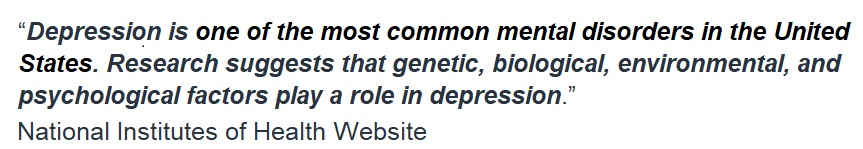

This Data Science Portfolio Website and accessory documents, code, etc. are kept in Github for public access

I used SQL to clean and sort out hundreds of data points related to depression rates in 40 countries around the world. I purposedly chose a small data set for clarity.
In my college project, I utilized R Studio for data transformations, normality testing, QQ plots, stepwise functions, outlier removal,
and regression analysis. Among the ten variables selected, I discovered that depression rates correlated most significantly with GDP and
alcohol consumption in the sampled populations. While the statistical analysis results might not be immediately apparent to the untrained eye,
data visualization can effectively reveal underlying trends
To showcase the difference in coding length and processing speed between Python and R Studio, I reproduced the R Studio code (seen above) using Python.

The original college project examined ten variables and their correlations with depression rates across 40 countries. Among these variables, two stood out: Gross Domestic Product (GDP) and Alcohol Consumption.
To visualize this relationship using Excel, for the first graph I focused on the correlation between the inverse of the Depression Rate and Alcohol Consumption by country. I inverted the depression rate
and applied various data manipulation techniques to scale and visualize the data effectively. These techniques ensure that the patterns are clear and meaningful. The first graph exhibits mirrored trend
between the lines for the two variables. This alignment suggests a correlation between the two variables. For the second graph, I focused on the correlation between Depression Rate and alcohol consumption
by region. Overall, there was a positive correlation between the Depression Rate and Alcohol Consumption. However, some exceptions stood out: despite low alcohol consumption, depression rates remained
relatively high the Middle East and similar trend, although weaker, in Africa, indicating that other factors might influence alcohol consumption and depression rates. Even powerful statistical tools have their
limitations including the ability to discern between Correlation and Causation. It’s essential to recognize that correlation does not imply causation. While we observe trends in the graphs, we cannot
definitively say whether depression leads to increased alcohol intake or vice versa. Cultural and religious views significantly impact alcohol consumption, especially in regions with large Muslim populations.
These factors may contribute to the observed trends, but further research is needed to establish causality. In summary, while we see correlations, understanding the underlying mechanisms requires careful
consideration of cultural context, individual differences, and additional variables. The project highlights the complexity of mental health and its connections to socioeconomic factors.
I utilized Tableau to create a data visualization that explores the correlation between Depression Rates and GDP per Capita across countries and regions. The first graph plots Depression Rate vs. GDP per Capita.
When you hover over a circle, it reveals information about that country’s depression rate. Notably, countries with higher GDP per Capita tend to exhibit lower depression rates. This suggests a positive relationship
between economic prosperity and mental well-being. The second graph highlights significant variations in GDP per Capita across different regions. Notably, Oceania, North America, and Europe do not exhibit a marked
difference between depression rate and GDP per Capita. In contrast, Africa stands out with a remarkable difference. Several factors may contribute to these extremes: Europe, North America, and Oceania benefit from
more equitable wealth distribution compared to developing regions and more so than Africa. Also, it’s essential to consider that Africa may be misrepresented in the data used for this analysis.